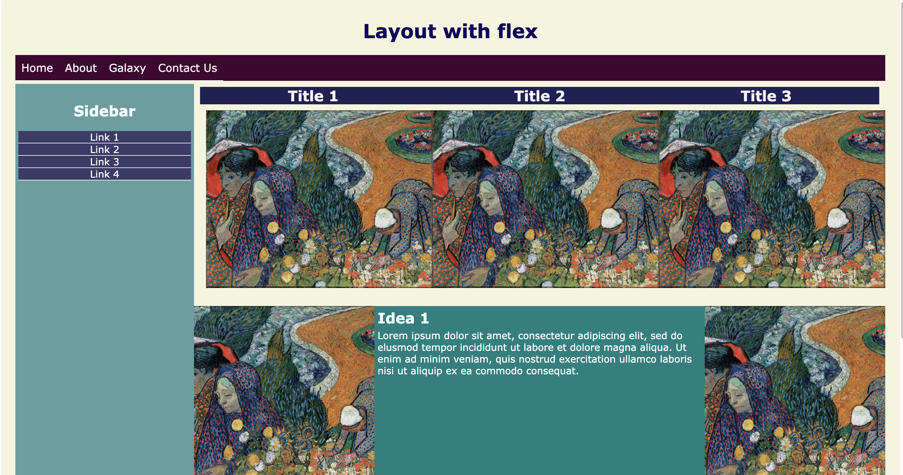
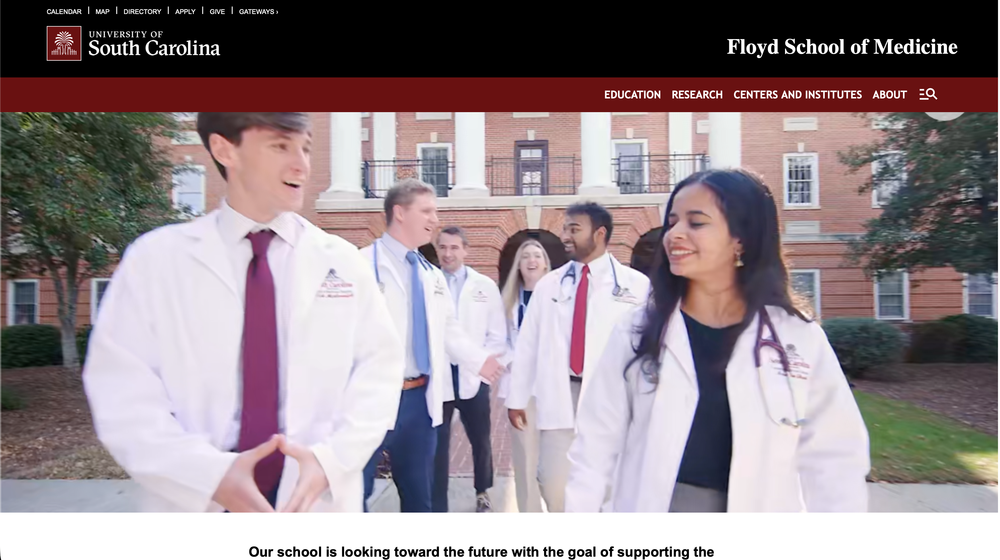
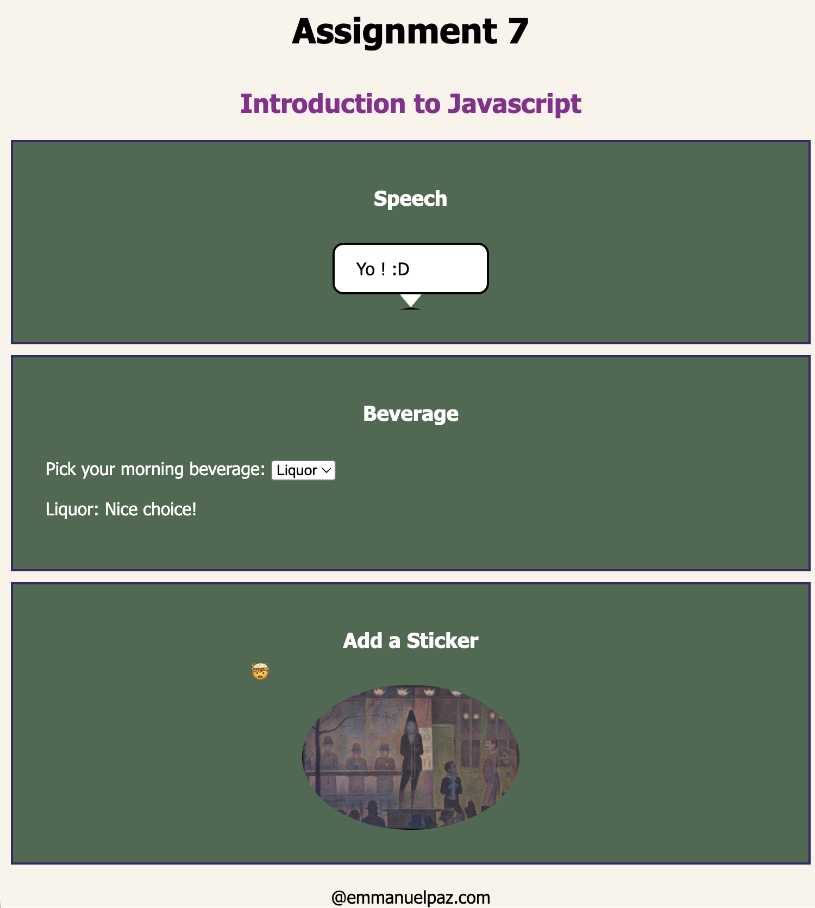
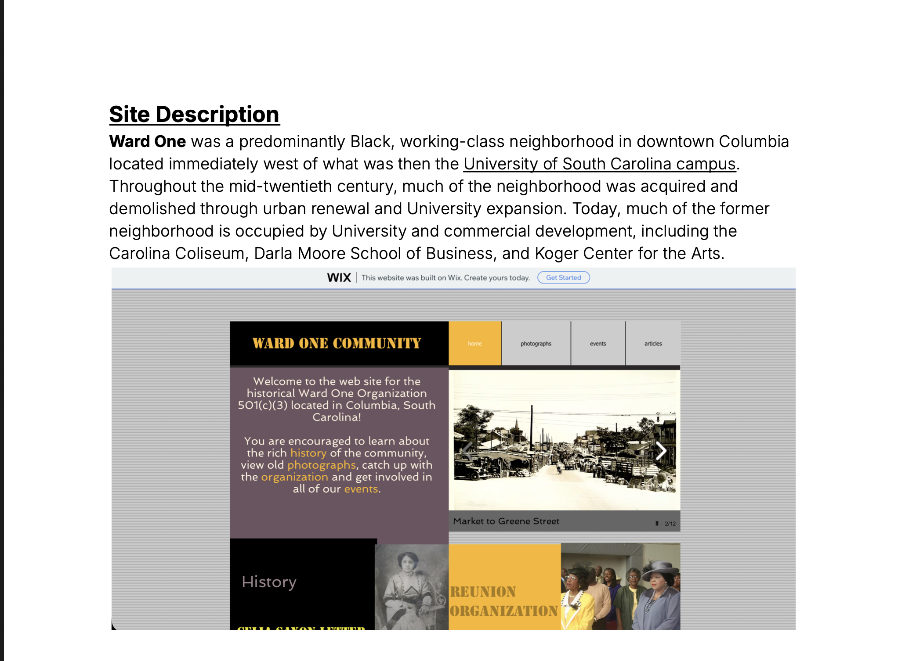
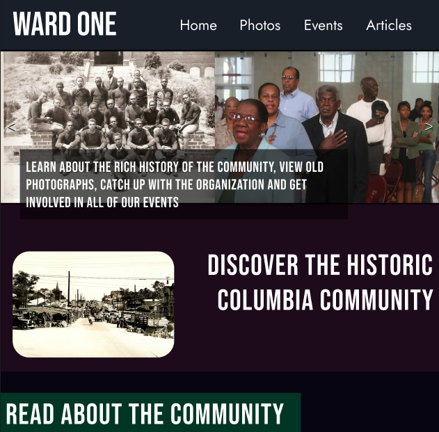
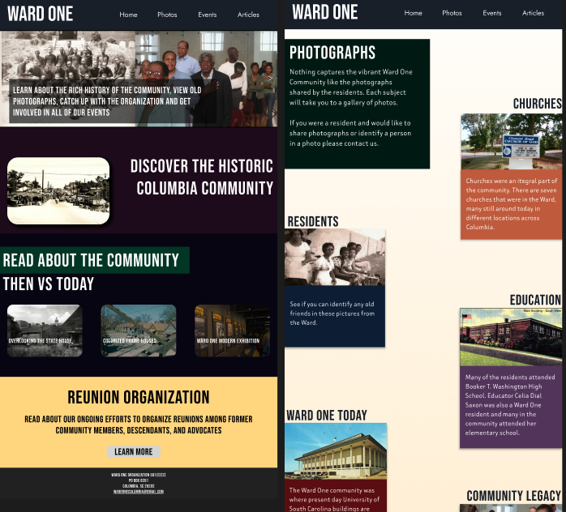

CSCE 242 Portfolio Page
Emmanuel Paz
ASSIGNMENTS

A simple website about Gaboon Vipers and their distinctions among other snakes and vipers. Used to practice html fundamentals and layout principles.

A simple website about the late 19th century painter Henri Rousseau, detailing his life, unique contributions as an artist, his reception, and comparisons to some of his contemporaries. Used to illustrate various ways CSS stylings can be used to transform and display websites. Providing basis for css + html class, ID, and attribute relationships.

Assignment where we experiment in designing mobile-first responsive sites that adapt to page widths. Also conceptually cover distinguishing between when to use IDS vs classes and the concept of nesting flex attributes among these classes.

Assignment where we're tasked with recreating largely the entire structure of USC'S Floyd School of Medicine Webpage. this includes flexbox, columnization, aligning buttons, divs, sections, footers etc. Ensuring all designs are inherintely responsive for mobile and desktop while also looking to the base site for margin and styling guidelines.

Assignment used to showcase simple JavaScript functions and their interaction with html and css elements. Showcasing onclick logic but also id routing and respective element class relationship toggles.
PROJECTS

Ward One was a predominantly Black, working-class neighborhood in downtown Columbia located immediately west of what was then the University of South Carolina campus. Throughout the mid-twentieth century, much of the neighborhood was acquired and demolished through urban renewal and University expansion. Today, much of the former neighborhood is occupied by University and commercial development, including the Carolina Coliseum, Darla Moore School of Business, and Koger Center for the Arts.

A demo iteration of the design of the Ward One Columbia website including grouped figma sections, classes, etc.
Link to figma walkthrough
Final wireframes for complete mapped out Ward One site recreation.
Link to figma walkthrough